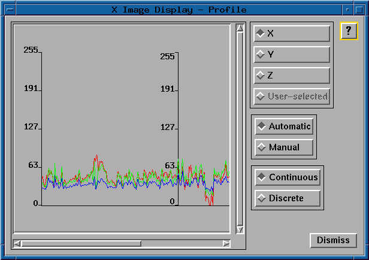

The X, Y, and Z radio buttons allow the user to select the dimension the profile is to be calculated in.
The automatic and manual radio buttons allow the user to select the update mode for the profile panel.In both the X and Y dimensions, the user will see three color coded profile lines on the plot representing the red, green and blue bands if the displayed image is color. If the displayed image is black and white, there will be only one profile line.
- X:
- The x-axis of the profile plot represents 1 to the number of displayed samples (a single line of image data). The y-axis represents the corresponding gray level value of each pixel (0 to 255).
- Y:
- The x-axis of the profile plot represents 1 to the number of displayed lines (a single column of image data). The y-axis represents the corresponding gray level value of each pixel (0 to 255).
- Z:
- The x-axis of the profile plot represents 1 to the number of image bands loaded. The y-axis again represents the corresponding gray level value of each pixel.
The continouous and discrete radio buttons allow the user to select the type of profile line to be drawn.
- Automatic:
- The profile information is updated each time the user moves the mouse within the main image window.
- Manual:
- The profile information is updated only when the user clicks the left mouse button in the main image window.
- Continuous:
- Draw the profile line as a continuous line between points.
- Discrete:
- Draw the profile line as discrete points.